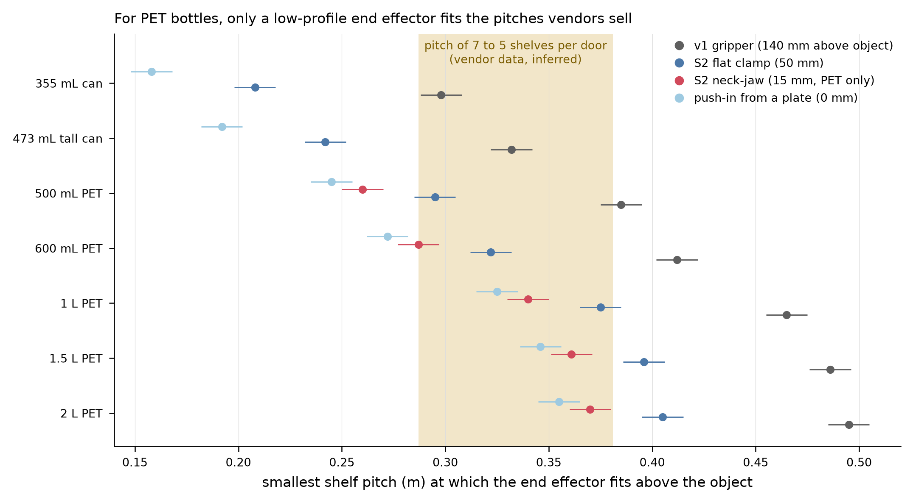
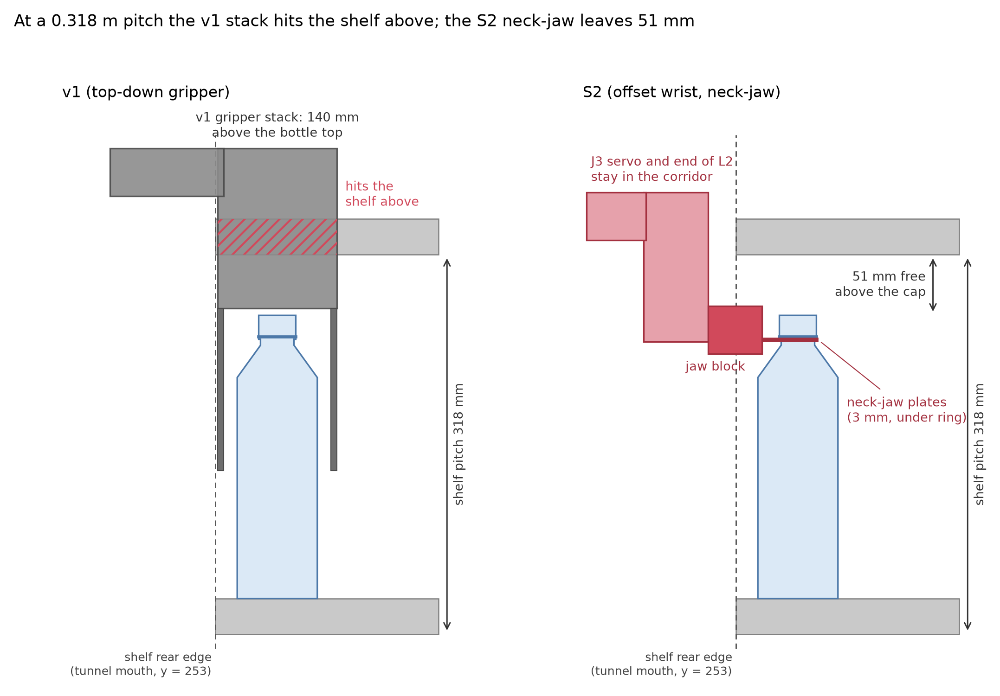

S2 end-of-arm design brief: offset wrist, neck-jaw (PET) and flat clamp (cans)
Status: concept brief written on 2026-10-02 from the desk research (ElRobot2_desk_research_pack.md). No S2 part exists in CAD, no S2 motion has been simulated, and nothing has been tested. Values marked ASSUMED or VERIFY must be checked on the first bottle or print.
1. Problem
The v1 stack (gripper, J3 servo and L2 cover) stands 140 mm above the object top. A standard rack leaves 15-109 mm above a 600 mL bottle (pitch 0.287-0.381 m, structure 30 mm, margin 5 mm). v1 therefore cannot serve a 600 mL or larger PET bottle in any of the five standard configurations (Figure 9); a 500 mL bottle fits only in the sparsest rack and only if the structure is thinner than about 26 mm. Only a part that is thin where it enters the shelf tunnel (y above 245 mm) can.
2. Requirements
| ID | Requirement | Value | Basis |
|---|---|---|---|
| R1 | Structure above the cap inside the tunnel (neck-jaw) | at most 15 mm | gap 15 mm at 0.287 m |
| R2 | Structure above the can top inside the tunnel (flat clamp) | at most 50 mm | gap 94 mm for a tall can at 0.287 m; 50 mm leaves margin |
| R3 | J3 servo, end of L2 and every part taller than R1/R2 | stay at y at most 233 mm at the place pose | tunnel mouth at y = 253 mm, 20 mm margin |
| R4 | Tool offset L3 (J3 axis to neck axis) | 100 mm (85-130 mm) | stack front edge 230 mm; J3 radius 205-273 mm inside 170-385 mm |
| R5 | Static moment at J3 | 0.83 Nm (0.65 kg), 1.25 Nm (1.07 kg) | tool 0.20 kg at 100 mm |
| R6 | J3 bearing pair | two 6701-2RS, 30 mm apart: 28-42 N per bearing | 6701 is in the inventory (x20) |
| R7 | L3 bar stiffness | section at least 6000 mm4 in PETG (20 x 16 mm: 0.6 mm droop) or aluminium | 20 x 10 mm droops 2.5 mm |
| R8 | Tool mass | at most 0.25 kg | v1 gripper 0.336 kg |
| R9 | Hold | form closure on the support ring for PET; friction not required | friction is unmeasured (0.2-1.0 in the literature) |
| R10 | Accelerations while a bottle hangs | at most 0.3 g | swing about the neck |
| R11 | Lane | 75 mm (600 mL class), 90 mm (1 L); bottle clearance 3.6-5 mm per side | glide data |
| R12 | Tote | single row, pitch at least 85 mm, open on the arm side, necks reachable horizontally | neck-jaw approach is horizontal |
| R13 | Rack mock-up | pitch adjustable 0.29-0.44 m in 10 mm steps, 75 mm lane inserts, 6-8 deg slope | envelope range |
3. Offset wrist
J3 keeps its servo (STS3215 C018) and flange (50 mm, bolts on a 36 mm square). An adapter carries a bearing housing (two 6701-2RS) and the L3 bar, so that the servo transmits torque only and the bearings carry the moment. The tool centre point is the neck axis: J3 = TCP - L3 * u(heading). For lane targets at y = 305 mm the J3 axis sits at y = 205 mm; the stack front edge is then 230 mm. VERIFY: the existing J3 pin and its bearing (14 mm pin, 46 mm flange in the v1 CAD) were designed for a hanging gripper with its centre of mass on the axis; if they cannot take 1.25 N*m, replace the pin by the bearing housing (one small part).
4. Neck-jaw (PET)
- Two jaw plates, 3 mm thick, closing along x just below the support ring (ring underside about 18 mm below the cap top, ASSUMED from the 17.0 mm finish height; VERIFY in H1), a fixed back stop behind the neck, a U-notch of about 30 mm (ASSUMED: ring outside diameter 33 mm, so 1.5 mm ledge per side; the neck under the ring is about 25 mm in the standards and 24.5 mm is the smallest under-neck diameter in an air-conveyor catalogue; VERIFY on 5-10 bottles). Air conveyors use the same principle for empty bottles. Jaw stroke about 6 mm per side (open 40 mm, closed 28 mm), so a small-stroke linkage on one STS3215 is enough.
- The weight rests on the ring ledges (about 30 mm2 of contact: 0.2 MPa for 0.65 kg, 0.35 MPa for 1.07 kg); the closing force (at least 10 N on the neck) only prevents swing.
- Jaw mechanism block (servo and linkage) behind the neck, top at most 8 mm above the cap, partly inside the tunnel mouth (front at y = 275 mm).
- Acquire: approach horizontally at ring height minus 3 mm until the neck touches the back stop, close, lift 5 mm so the ring seats, then carry. Release: lower to the glide, open, retreat along -y.
- Open questions: free neck below the ring (3 mm jaw needs at least 4 mm), tamper bands and sports caps, sleeve labels, swing damping.
5. Flat clamp (cans)
Rack-and-pinion clamp with the pinion axis along x and one rack above and one below it (stack: pinion 24 mm + two racks 6 mm + clearances, about 48 mm), servo lying behind the clamp in the corridor, fingers closing along the lane axis as in v1. Clamp force and pad parameters as v1 (34.7 N per finger rated, 41.7 N cap); cans need 14 N at friction 0.4 and 19 N at 0.3. Printed TPU 95A pads are acceptable for cans; use cast polyurethane or silicone pads for a 1 L.
6. What S2 reuses
Z module, base, J1/J2 turret, L1, L2, electronics, camera and the calibration scripts. New parts: adapter and bearing housing, L3 bar, neck-jaw, flat clamp, tote tray (single row), rack mock-up with adjustable pitch and 75 mm lane inserts. The v1 gripper stays as a development tool for level-1 (open-top) tests.
7. Validation sequence
- CAD of the new parts with fit checks against the STS3215, a PCO-1881 neck model (ring 33 mm ASSUMED) and a rack model at pitches 0.287, 0.318 and 0.381 m; reach study over five lanes (75 and 90 mm) and the tote.
- MuJoCo: a bottle hanging from the jaws (ring contact), swing under planned accelerations, release into a 75 mm lane, placement error budget (clearance 3.6-5 mm against servo backlash of 3.4 mm at full reach).
- Bench (Phase H1-H6 of the test plan): printed neck stub, then real bottles, then rack mock-up.
- Gate: if H3 (placement into a 75 mm lane at 0.318 m) is below 9 of 10 after two design iterations, build the push-in plate.
8. Risks (also in the risk register)
Neck geometry variability; swing; placement tolerance in 75 mm lanes; J3 moment; the 5 mm margin and 30 mm structure thickness are assumptions; a Z range of 0.37-1.06 m reaches only 2-3 shelves of a 1.9-2.2 m rack.

